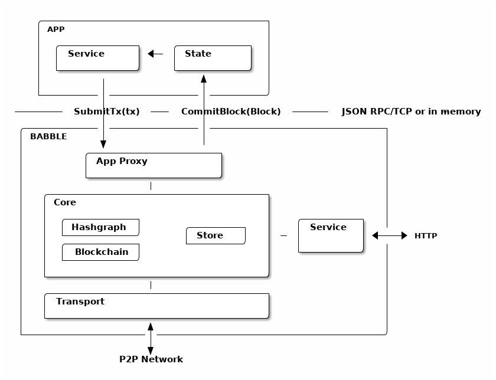
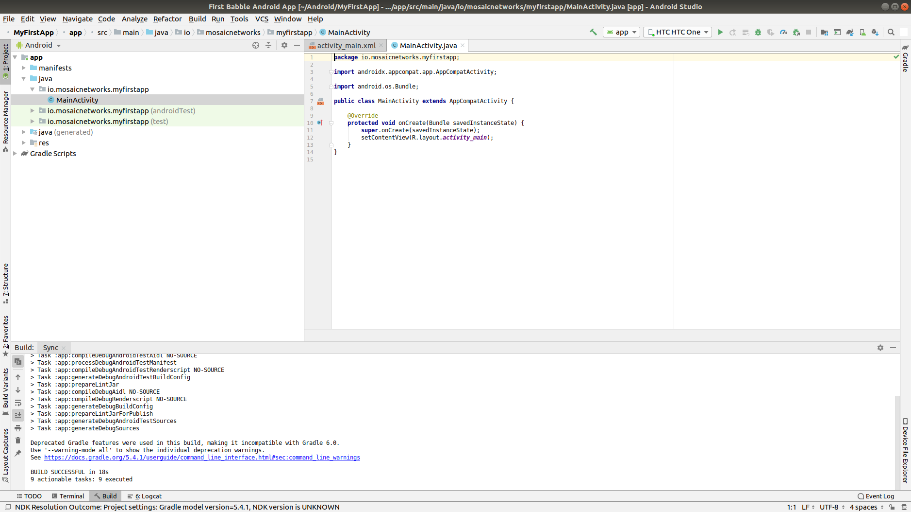
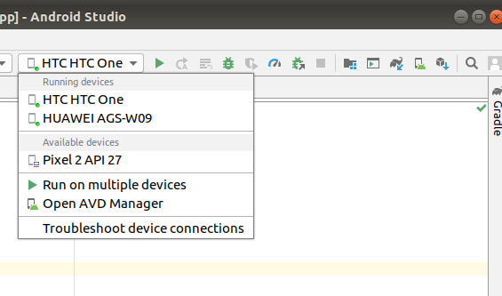
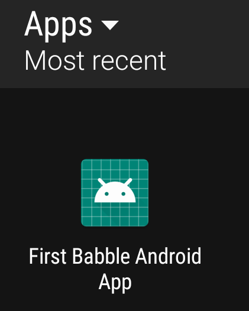
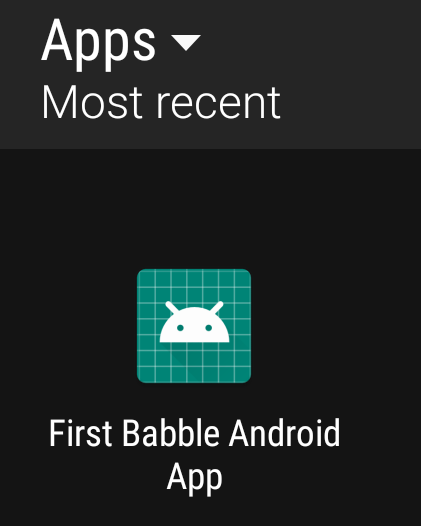
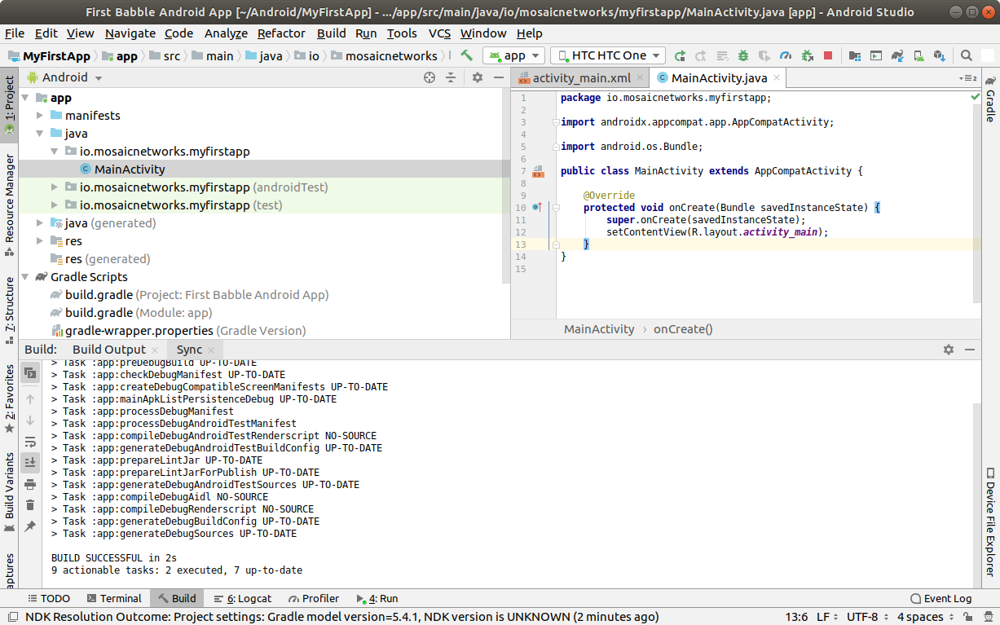
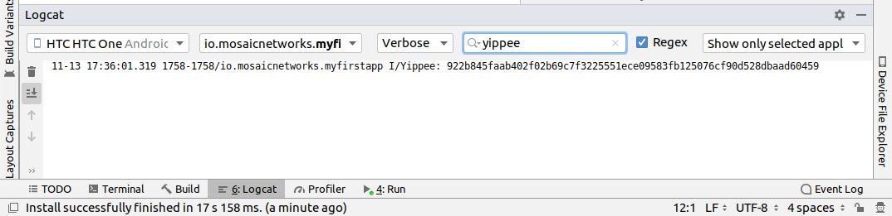
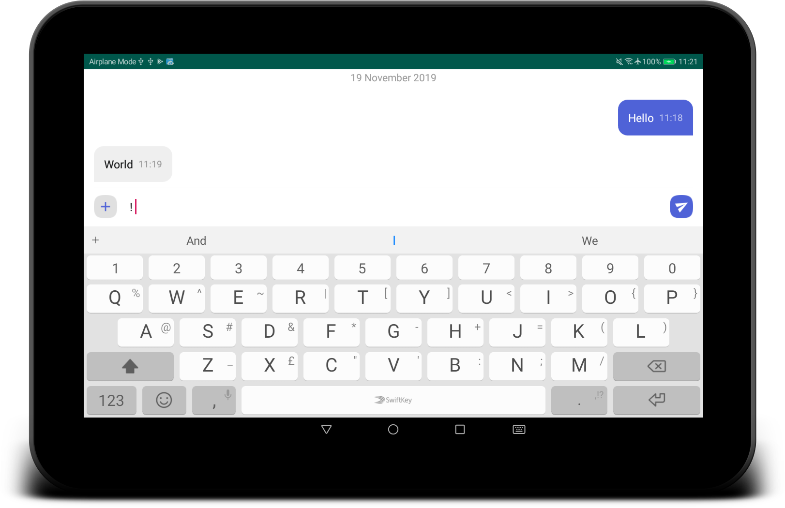
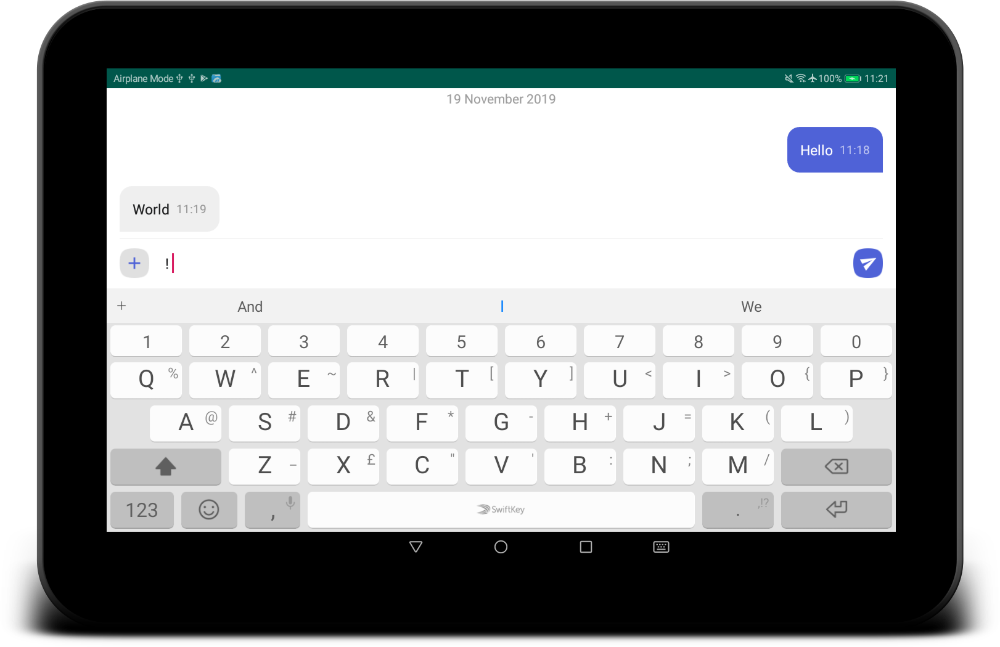

Version 0.1.0
Version 0.1.0 – November, 2019
This article is a walkthrough of the process of building your first Android App using the babble-android library. We are working towards the Sample App included in the babble-android library1.
Babble enables multiple computers to behave as one. It uses Peer to Peer (P2P) networking and a consensus algorithm to guarantee that a group of connected computers process the same commands in the same order; a technique known as state-machine replication. This makes for secure systems that can tolerate arbitrary failures, including malicious behaviour.
We use an adaptation of the Hashgraph consensus algorithm, invented by Leemon Baird. Hashgraph is best described in the white-paper and its accompanying document. The original algorithm is protected by patents in the USA. Therefore, anyone intending to use this software in the USA should obtain a license from the patent holders.
Hashgraph is based on the intuitive idea that gossiping about gossip itself yields enough information to compute a consensus ordering of events. It attains the theoretical limit of tolerating up to one-third of faulty nodes without compromising on speed. For those familiar with the jargon, it is a leaderless, asynchronous BFT consensus algorithm.
Babble projects the output of the consensus algorithm onto a linear blockchain which is more suitable for representing an ordered list of transactions and facilitates the creation of light-clients. For information about this projection please refer to documentation pages.
This blockchain mapping is also instrumental in two important features that were alluded to in Baird’s paper, but not implemented:
A fast-sync protocol which enables nodes to join a cluster without having to download the entire history of gossip.
A dynamic membership protocol, which enables peers to join or leave a cluster on demand.
Babble is designed to integrate with applications written in any programming language.

Almost any software application can be modelled in terms of a service and a state. The service is responsible for processing commands (ex. user input), while the state is responsible for manipulating and storing the data (eg. database). Usually, when commands need to update the data, the service will invoke the state directly. In a distributed application, however, commands (referred to as transactions in this context), must be broadcast to all replicas and consistently ordered before being applied to the state. This ensures that all replicas process the same commands in the same order. Hence, the service no longer communicates directly with the state (except for read-only requests), but forwards commands to a transaction ordering system which takes care of broadcasting and ordering the transactions across all replicas before feeding them back to the application’s state.
Babble is an ordering system that plugs into any application thanks to a very simple interface. It uses a consensus algorithm, to replicate and order the transactions, and a blockchain to represent the resulting list. A blockchain is a linear data structure composed of batches of transactions, hashed and signed together, easily allowing to verify any transaction. So, instead of applying commands directly to the state, Babble applications must forward the commands to Babble and let them be processed asynchronously by the consensus system before receiving them back, in blocks, ready to be applied to the state.
Note that it is left to the application layer to filter out bad transactions before relaying them from clients to the consensus engine. Unlike other middleware designed to sit in front of the application (like Apache or Tendermint), the user-facing API is app-specific, and Babble just takes care or managing the consensus “under the hood”. This filtering partially addresses spam from anonymous clients, but doesn’t protect against malicious nodes spamming the network; that is a potential enhancement on the roadmap.
Babble communicates with the App through an AppProxy interface, which has two implementations:
SocketProxy: A SocketProxy connects to an App via TCP sockets. It enables the application to run in a separate process or machine, and to be written in any programming language.
InmemProxy : An InmemProxy uses native callback handlers to integrate Babble as a regular Go dependency.
The AppProxy interface exposes three methods for Babble to call the App:
CommitBlock(Block) (CommitResponse, error): Commits a block to the application and returns the resulting state-hash, with accepted internal transactions.GetSnapshot(int) ([]byte, error): Gets the application snapshot corresponding to a particular block index.Restore([]byte) error: Restores the App state from a snapshot.Reciprocally, AppProxy relays transactions from the App to Babble via a native Go channel - SubmitCh - which ties into the application differently depending on the type of proxy (Socket or Inmem).
Babble asynchronously processes transactions and eventually feeds them back to the App, in consensus order and bundled into blocks, with a CommitBlock call. Transactions are just raw bytes and Babble does not need to know what they represent. Therefore, encoding and decoding transactions is done by the App.
We will assume that you have installed Android Studio, an Android SDK with API version 29 and Android NDK. Android API 29 (10.0 / Q) is assumed, if use a previous version the create activity items in these instructions will use AppCompat instead of AndroidX2, leading to incompatibilities with the pasted source code. The babble node itself is compatible with AppCompat, but converting the sample to use AppCompat is beyond the scope of this article.
This tutorial is going to assume deployment to a physical Android device. Thus you will need an Android device (minimum API version 193) with the developer options turned on, debugging enabled, and a suitable USB cable. You could use the android emulator, but that is beyond the scope of this article.
First up we will create a minimal app to test our environment and prove that we have loaded the babble-android library correctly. Fire up Android Studio and select File/New Project. You are asked to choose a project template.
Choose Empty Activity from the Phone and Tablet tab, and click Next.

The options here should be self-explanatory. We would recommend not using spaces in the Package Name or the Save Location. Do not set the Minimum API Level below 19. Click Finish.

Android Studio will open, and after expanding some of the menus it will look something like above.
N.B. the screen will change a few seconds after opening when the initial gradle scripts complete. The status bar at the bottom of the window should tell you this is happening.
Connect your android device to your computer via a USB cable. First we will test that the Android Debug Bridge (adb) can see the device.
jon@hpjon:~/Android/MyFirstApp$ adb devices
List of devices attached
4JPNU18709118621 device
jon@hpjon:~/Android/MyFirstApp$ The command adb kill-server will reset this connection.
If you can see a device listed, go back to Android Studio. and in the top right is a target device dropdown. Select your device from the list.

If you cannot find your device in the list, the Troubleshoot device connections option on that menu should help.
Then press that little green triangle to the right of the dropdown device menu. Gradle then builds the app, which is then installed onto the physical android device that you selected. The whole process tool about 20 seconds on my laptop (feel free to buy me a quicker one).
 

If you look on the device, you should find the app installed, as on the right above.
Congratulations, you have an app. Now onto Babble…
We will now integrate the babble-android library into our skeleton app. We will use it to generate a key pair – just to prove that we have a working library instance.
The library is hosted jcenter. To make it available, we need to amend some gradle scripts.

In Android Studio, double click on the Project build.gradle as highlighted in the screenshot above.
We then add the 3 line maven instruction as below:
allprojects {
repositories {
google()
jcenter()
maven {
url 'https://dl.bintray.com/mosaicnetworks/maven'
}
}
} Which leaves the entire file looking like this:
// Top-level build file where you can add configuration options common to all
// sub-projects/modules.
buildscript {
repositories {
google()
jcenter()
}
dependencies {
classpath 'com.android.tools.build:gradle:3.5.2'
// NOTE: Do not place your application dependencies here; they belong
// in the individual module build.gradle files
}
}
allprojects {
repositories {
google()
jcenter()
maven {
url 'https://dl.bintray.com/mosaicnetworks/maven'
}
}
}
task clean(type: Delete) {
delete rootProject.buildDir
}
Next we need to amend the app build.gradle (it is below the Project build.gradle in the screenshot above. We add an implementation line to the bottom dependencies section.
implementation 'io.mosaicnetworks:babble:0.1.0'This leaves us with this full file:
apply plugin: 'com.android.application'
android {
compileSdkVersion 29
buildToolsVersion "29.0.2"
defaultConfig {
applicationId "io.mosaicnetworks.myfirstapp"
minSdkVersion 19
targetSdkVersion 29
versionCode 1
versionName "1.0"
testInstrumentationRunner "androidx.test.runner.AndroidJUnitRunner"
}
buildTypes {
release {
minifyEnabled false
proguardFiles getDefaultProguardFile('proguard-android-optimize.txt'),
'proguard-rules.pro'
}
}
}
dependencies {
implementation fileTree(dir: 'libs', include: ['*.jar'])
implementation 'io.mosaicnetworks:babble:0.2.1'
implementation 'androidx.appcompat:appcompat:1.1.0'
implementation 'androidx.constraintlayout:constraintlayout:1.1.3'
testImplementation 'junit:junit:4.12'
androidTestImplementation 'androidx.test.ext:junit:1.1.1'
androidTestImplementation 'androidx.test.espresso:espresso-core:3.2.0'
}
When you get a message like the above, click the Sync Now link on the right of the message.
The library should now be included in the project. So lets use it! Open MainActivity.java as below:

Add the lines below underneath the last import statement. The lines will appear greyed out, as the import is not yet used. As well as babble we are importing the Log package to write to the Android logs.
Add the following lines as the last line of the onCreate function
This code generates a key pair and writes the private code to the logs.
Save all the files and run your app.

The app looks exactly as per the previous iteration, so lets take a look under the hood. Press logcat, as highlighted in gray in the screenshot above. Then type yippee in the search box at the top of that window to filter the logs. You should have a freshly generated private key in there.
This project at this stage is available from github from here 4
The downloadable version of the project has mosaic network icons, rather than the default android ones. You can customise the icons using Android Studio Image Asset Studio.5
Now we have access to the babble library from within our app, the next stage is to start a babble network. We will start with a single node. But before we can start babble we need to add some UI elements to allow us to interact with our babble node.
Currently our application launches the activity MainActivity which calls the key pair generation code in it’s onCreate method.
In the Sample App 6 that we are working towards, the MainActivity Screen presents the user with a choice of “New” or “Join”. New starts a new babble network with your device as the sole peer. Join lets you specify the address of an existing network, pull down the configuration for that network and request to join it.
As New is standalone functionality, and Join requires New be implemented to function, we will implement New first.
First up we will amend MainActivity.java. replace all of the code with the following:
package io.mosaicnetworks.myfirstapp;
import androidx.appcompat.app.AppCompatActivity;
import android.content.Intent;
import android.os.Bundle;
import io.mosaicnetworks.babble.node.KeyPair;
import io.mosaicnetworks.babble.configure.BaseConfigActivity;
import io.mosaicnetworks.babble.node.BabbleService;
import android.util.Log;
public class MainActivity extends BaseConfigActivity {
@Override
public BabbleService getBabbleService() {
return MessagingService.getInstance();
}
@Override
public void onJoined(String moniker) {
// DO nothing for now
}
@Override
public void onStartedNew(String moniker) {
Intent intent = new Intent(this, ChatActivity.class);
intent.putExtra("MONIKER", moniker);
startActivity(intent);
}
}We have removed our key generation in the onCreate method. Instead MainActivity now extends BaseConfigActivity. The BaseConfigActivity provides screens to create New and to Join networks. We just need to define the callback event handlers for each case. The further processing is identical in both cases - both result in your babble node being started and in a babble network – the only difference is the number of nodes.
If you want more control over the network joining screens, the branches with 0.2.1 suffices in the github repo have a worked version using activities external to the babble-android library.
Add the line below as the first line of the class, we will use this later to identified log messages from our app. :
public class MainActivity extends AppCompatActivity {
public static final String TAG = "FIRST-BABBLE-APP";Copy the source below into place in the same folder as MainActivity.java:
package io.mosaicnetworks.myfirstapp;
import com.google.gson.JsonSyntaxException;
import java.nio.charset.StandardCharsets;
import java.util.ArrayList;
import java.util.HashMap;
import java.util.List;
import java.util.Map;
import io.mosaicnetworks.babble.node.BabbleState;
public class AppState implements BabbleState {
private byte[] mStateHash = new byte[0];
private final Map<Integer, BabbleTx> mState = new HashMap<>();
private Integer mNextIndex = 0;
@Override
public byte[] applyTransactions(byte[][] transactions) {
for (byte[] rawTx:transactions) {
String tx = new String(rawTx, StandardCharsets.UTF_8);
BabbleTx babbleTx;
try {
babbleTx = BabbleTx.fromJson(tx);
} catch (JsonSyntaxException ex) {
//skip any malformed transactions
continue;
}
mState.put(mNextIndex, babbleTx);
mNextIndex++;
}
updateStateHash();
return mStateHash;
}
@Override
public void reset() {
mState.clear();
mNextIndex = 0;
}
public List<Message> getMessagesFromIndex(Integer index) {
if (index<0) {
throw new IllegalArgumentException("Index cannot be less than 0");
}
if (index >= mNextIndex) {
return new ArrayList<>();
}
Integer numMessages = mNextIndex - index;
List<Message> messages = new ArrayList<>(numMessages);
for (int i = 0; i < numMessages; i++) {
messages.add(Message.fromBabbleTx(mState.get(index + i)));
}
return messages;
}
private void updateStateHash() {
//TODO: implement this
}
}Copy the source below into place in the same folder as MainActivity.java:
package io.mosaicnetworks.myfirstapp;
import com.google.gson.Gson;
import com.google.gson.annotations.SerializedName;
public class BabbleTx implements io.mosaicnetworks.babble.node.BabbleTx {
private final static Gson gson = new Gson();
@SerializedName("from")
public final String from;
@SerializedName("text")
public final String text;
public BabbleTx(String from, String text) {
this.from = from;
this.text = text;
}
public static BabbleTx fromJson(String txJson) {
return gson.fromJson(txJson, BabbleTx.class);
}
@Override
public byte[] toBytes() {
return gson.toJson(this).getBytes();
}
}Copy the source below into place in the same folder as MainActivity.java:
package io.mosaicnetworks.myfirstapp;
import com.stfalcon.chatkit.commons.models.IMessage;
import com.stfalcon.chatkit.commons.models.IUser;
import java.util.Date;
public final class Message implements IMessage {
public final static class Author implements IUser {
private final String mName;
public Author(String name) {
mName = name;
}
@Override
public String getId() {
return mName;
}
@Override
public String getName() {
return mName;
}
@Override
public String getAvatar() {
return null;
}
}
private final String mText;
private final String mAuthor;
private final Date mDate;
public Message(String text, String author) {
mText = text;
mAuthor = author;
mDate = new Date();
}
public static Message fromBabbleTx(BabbleTx babbleTx) {
return new Message(babbleTx.text, babbleTx.from);
}
public BabbleTx toBabbleTx() {
return new BabbleTx(mAuthor, mText);
}
@Override
public String getId() {
return mAuthor;
}
@Override
public String getText() {
return mText;
}
@Override
public Author getUser() {
return new Author(mAuthor);
}
@Override
public Date getCreatedAt() {
return mDate;
}
}You will note the section below introduces an external dependency:
import com.stfalcon.chatkit.commons.models.IMessage;
import com.stfalcon.chatkit.commons.models.IUser;Add the lines below to the app build.gradle file dependencies section, and click Sync Now on the pop up bar:
implementation 'com.google.code.gson:gson:2.8.5'
implementation 'com.github.stfalcon:chatkit:0.3.3'Copy the source below into place in the same folder as MainActivity.java:
package io.mosaicnetworks.myfirstapp;
import io.mosaicnetworks.babble.node.BabbleService;
public final class MessagingService extends BabbleService<AppState> {
private static MessagingService INSTANCE;
public static MessagingService getInstance() {
if (INSTANCE==null) {
INSTANCE = new MessagingService();
}
return INSTANCE;
}
private MessagingService() {
super(new AppState());
}
}Create a new empty activity, ChatActivity. We will not add any functionality to it at this point, we just need it to exist as it is referenced in MainActivity.
And finally after all of that cut and paste, we have a working instance of babble — albeit with at least one major drawback — it has no UI and no way to access it.
If you start the app through Android Studio, and look at the logcat output (filtered to just our app), after pressing the New button, entering a Moniker and pressing the Join button, you should see something like below:

The lines of red text are the lines of interest, stripping out the date and other prefixes gives something like:
msg="Creating InmemStore" prefix=babble
msg=PARTICIPANTS genesis_peers=1 id=2193277640 moniker=Jon peers=1 prefix=babble
msg="Start Listening" prefix=babble
msg="Node belongs to PeerSet" prefix=babble
msg="FastSync not enabled => Babbling" prefix=babble
msg=SetHeadAndSeq core.Head= core.Seq=-1 prefix=babble
msg=runasync gossip=true prefix=babble
msg="Run loop" prefix=babble state=Babbling
msg=BABBLING prefix=babbleThe key item is the “state=Babbling” line, which denotes that Babble is up and running.
We have just added a lot of code, which is all co-dependent. Now we have a babble invocation in place, we can pause to explain what just happened there.
The configuration of a babble node is handled by the BaseConfigActivity class from whom MainActivity inherits. We just need to wire in the ChatActivity to take over once we have a Babble network.
We define a MessagingService using the getBabbleService() function. This boilerplate class wraps BabbleService from the babble-android library.
This project at this stage is available from github from here 7
The next stage is to make Babble usable. To do that we need to work on the ChatActivity so it sends and receives messages from Babble.
First up we need a UI. We are going to use ChatKit rather than reinvent the wheel.
We can then add the layout to res/layout/activity_chat.xml — replace all the contents with the code below:
<?xml version="1.0" encoding="utf-8"?>
<RelativeLayout
xmlns:android="http://schemas.android.com/apk/res/android"
xmlns:app="http://schemas.android.com/apk/res-auto"
xmlns:tools="http://schemas.android.com/tools"
android:layout_width="match_parent"
android:layout_height="match_parent"
android:background="@color/white"
tools:context=".ChatActivity">
<com.stfalcon.chatkit.messages.MessagesList
android:id="@+id/messagesList"
android:layout_width="match_parent"
android:layout_height="match_parent"
android:layout_above="@+id/input"/>
<View
android:layout_width="match_parent"
android:layout_height="1dp"
android:layout_above="@+id/input"
android:layout_marginLeft="16dp"
android:layout_marginRight="16dp"
android:background="@color/gray_light"/>
<com.stfalcon.chatkit.messages.MessageInput
android:id="@+id/input"
android:layout_width="match_parent"
android:layout_height="wrap_content"
android:layout_alignParentBottom="true"
app:inputHint="@string/hint_enter_a_message"
app:showAttachmentButton="true"/>
</RelativeLayout>The layout here is a fairly standard chat layout a message entry section at the bottom of the screen and a message display above it.
We need to the add the following to res/values/colors.xml as it is used in the code changes above.
Replace all of the file ChatActivity.java with the code below:
package io.mosaicnetworks.myfirstapp;
import android.content.Intent;
import android.os.Bundle;
import android.widget.Toast;
import androidx.appcompat.app.AppCompatActivity;
import com.stfalcon.chatkit.messages.MessageInput;
import com.stfalcon.chatkit.messages.MessagesList;
import com.stfalcon.chatkit.messages.MessagesListAdapter;
import java.util.List;
import io.mosaicnetworks.babble.node.BabbleService;
import io.mosaicnetworks.babble.node.ServiceObserver;
public class ChatActivity extends AppCompatActivity implements ServiceObserver {
private MessagesListAdapter<Message> mAdapter;
private String mMoniker;
private final MessagingService mMessagingService =
MessagingService.getInstance();
private Integer mMessageIndex = 0;
@Override
protected void onCreate(Bundle savedInstanceState) {
super.onCreate(savedInstanceState);
setContentView(R.layout.activity_chat);
Intent intent = getIntent();
mMoniker = intent.getStringExtra("MONIKER");
initialiseAdapter();
mMessagingService.registerObserver(this);
if (mMessagingService.getState()!=
BabbleService.State.RUNNING_WITH_DISCOVERY) {
Toast.makeText(this,
"Unable to advertise peers",
Toast.LENGTH_LONG).show();
}
}
private void initialiseAdapter() {
MessagesList mMessagesList = findViewById(R.id.messagesList);
mAdapter = new MessagesListAdapter<>(mMoniker, null);
mMessagesList.setAdapter(mAdapter);
MessageInput input = findViewById(R.id.input);
input.setInputListener(new MessageInput.InputListener() {
@Override
public boolean onSubmit(CharSequence input) {
mMessagingService.submitTx(
new Message(input.toString(), mMoniker).toBabbleTx());
return true;
}
});
}
@Override
public void stateUpdated() {
final List<Message> newMessages =
mMessagingService.state.getMessagesFromIndex(mMessageIndex);
runOnUiThread(new Runnable() {
@Override
public void run() {
for (Message message : newMessages ) {
mAdapter.addToStart(message, true);
}
}
});
mMessageIndex = mMessageIndex + newMessages.size();
}
@Override
public void onBackPressed() {
mMessagingService.leave(null);
super.onBackPressed();
}
@Override
protected void onDestroy() {
mMessagingService.removeObserver(this);
super.onDestroy();
}
}We need to the add the following to res/values/strings.xml as they are used in the code changes above.
Build your app and run it. You should now be able to start a chat with yourself and send messages to yourself as below:

This project at this stage is available from github from here 8
Thus far, we have been dealing with a single node, which kind of misses the whole point of having a blockchain. So this section remedies this. We will add a new button the MainActivity to Join an existing blockchain. This will require discovering the network - we will just enter an IP address for the moment - although more complex schemes would be used in a production environment.
In the previous version (0.2.1) of Babble-Android, the explanation for joining was over 400 lines of markdown text (plus screenshots). As of 0.2.2, it is just to add 3 lines of code (shown in context below) to MainActivity.java
@Override
public void onJoined(String moniker) {
Intent intent = new Intent(this, ChatActivity.class);
intent.putExtra("MONIKER", moniker);
startActivity(intent);
}Build your app and run it on 2 devices. You should now be able to start a chat on one and join with the other:
 

This project at this stage is available from github from here 9
The sample app is part of the babble-android library and is available from the GitHub repo↩︎
You can read more about AndroidX here: https://android-developers.googleblog.com/2018/05/hello-world-androidx.html↩︎
API version 19 is Android 4.4 (KitKat). In May 3.8% of devices were using version 18 or lower. Android 4.4 was released in 2013. Whilst it would be possible to code support for earlier versions, the existing code uses Android features introduced in Android 4.4.↩︎
This code is the stage1 branch at https://github.com/mosaicnetworks/babble-android-tutorial/tree/stage1↩︎
Android Studio Image Asset Studio is described here: https://developer.android.com/studio/write/image-asset-studio↩︎
The sample app is part of the babble-android library and is available from the GitHub repo↩︎
This code is the stage2 branch at https://github.com/mosaicnetworks/babble-android-tutorial/tree/stage2↩︎
This code is the stage3 branch at https://github.com/mosaicnetworks/babble-android-tutorial/tree/stage3↩︎
This code is the stage4 branch at https://github.com/mosaicnetworks/babble-android-tutorial/tree/stage4↩︎